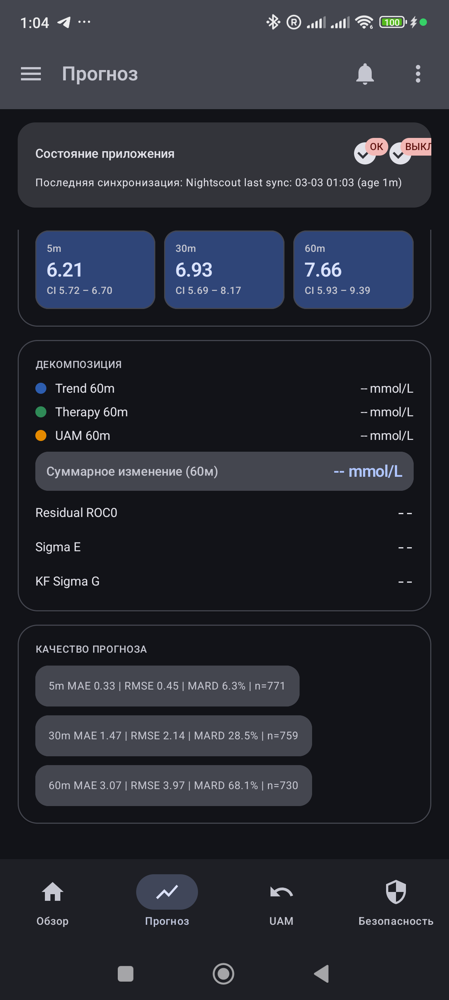
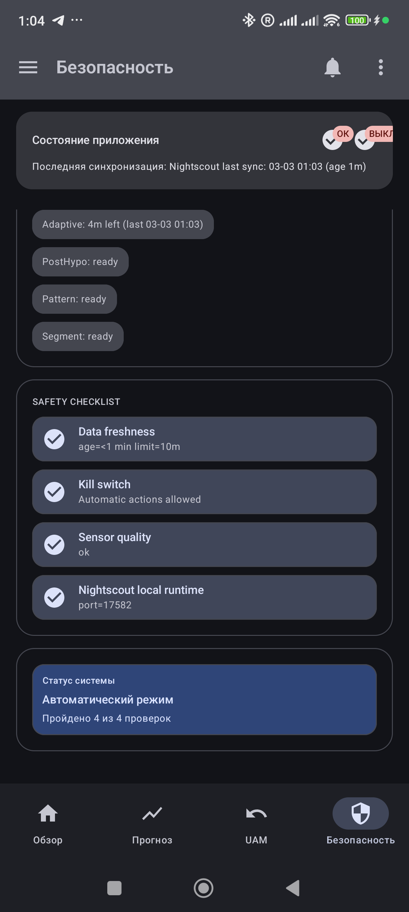
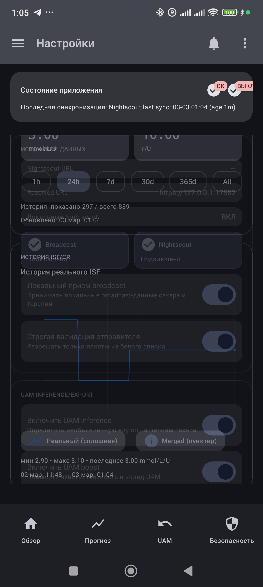
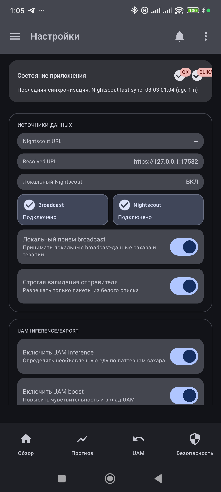

AAPS Predictive Copilot — UI Handoff
Pixel-accurate transfer package from current Android app build (Compose Material 3). Includes live screenshots + page structure + tokens + component behavior.
Bottom nav: Overview / Forecast / UAM / Safety
More: Audit Log / Analytics / Settings
State model: Loading / Empty / Error / Ready + Stale
Theme: Light/Dark + Dynamic Color (Android 12+)
Design Tokens
Spacing
4 / 8 / 12 / 16 / 24 / 32
Elevation
1 / 3 / 6 dp
Shapes
small 12, medium 16, large 20, section 18, pill 999
Numeric Typography
Monospace values: 36 / 24 / 16
Status Semantic
Success, Warning, Error via container + onContainer pairs
Contrast Rule
No color-only statuses: icon + label + semantic color
Shared Components
- TopAppBar with status icon and overflow menu
- AppHealthBanner (stale / kill switch / last sync)
- SectionCard + InfoCell + Pills + Chips
- SafetyBanner (info/warn/error/success)
- ScreenStateLayout with skeletons for LOADING
- Chart container style for Forecast/Analytics
Overview
Primary Dashboard
Forecast
Explainer
UAM
Operational
Safety
Safety Center
Audit Log
Traceability
Analytics
ISF/CR + Quality
Settings
Configuration